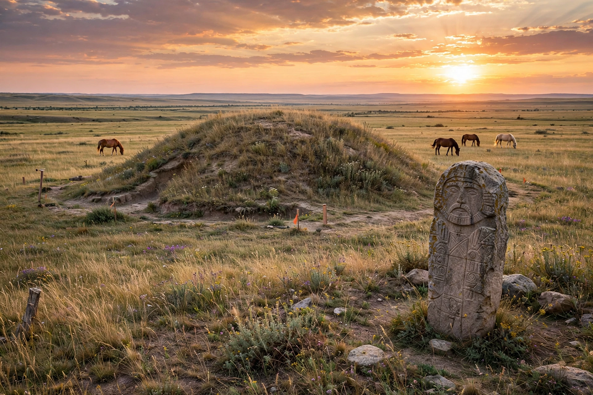

The Kurgan hypothesis is the leading theory for the origin and spread of the Proto-Indo-Europeans. Proposed by Marija Gimbutas in 1956, it locates the Proto-Indo-European homeland in the Pontic–Caspian steppe north of the Black and Caspian Seas.
Kurgans are burial mounds characteristic of steppe cultures. Gimbutas argued that pastoralist, patriarchal, horse-riding peoples expanded in several waves between about 4000 and 1000 BCE, bringing Indo-European languages to Europe and Asia.
The Yamnaya (Pit Grave) culture (c. 3300–2600 BCE) is central to the model. Ancient DNA studies since 2015 have confirmed a major migration of steppe ancestry into Europe associated with the Corded Ware culture, strongly supporting a steppe origin, though debates continue over details and over the Anatolian branch.
Alternatives include Colin Renfrew's Anatolian hypothesis, linking the spread to early farming from Anatolia. See also Indo-European languages.